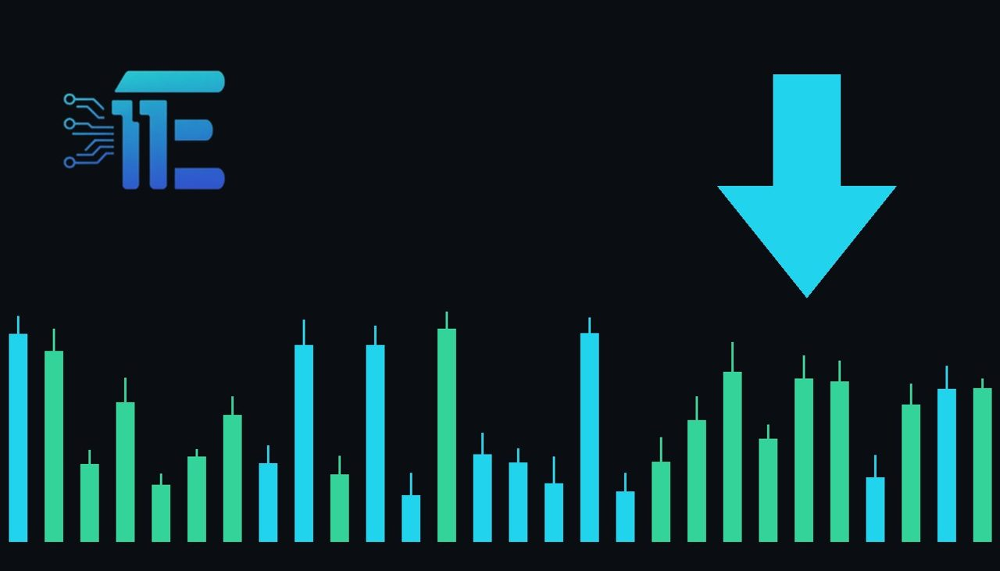

Gold Plunges 37% From Record High on Rising Yieldsតម្លៃមាសធ្លាក់ចុះ 37% ពីកម្រិតខ្ពស់បំផុតដោយសារទិន្នផលសញ្ញាប័ណ្ណកើនឡើង
XAU/USD impact: ▼ Bearishផលប៉ះពាល់លើ XAU/USD: ▼ ធ្លាក់

Gold prices have dropped 37% from their all-time high as rising Treasury yields curb demand for bullion. Investors are reassessing precious metals ahead of the Federal Reserve's December policy meeting.
តម្លៃមាសបានធ្លាក់ចុះ 37% ពីកម្រិតខ្ពស់បំផុតជាប្រវត្តិសាស្ត្រ ខណៈដែលការកើនឡើងនៃទិន្នផល Treasury បានកាត់បន្ថយតម្រូវការលើលោហៈធាតុមានតម្លៃ។ វិនិយោគិនកំពុងវាយតម្លៃឡើងវិញលើលោហៈធាតុមានតម្លៃ មុនពេលកិច្ចប្រជុំគោលនយោបាយខែធ្នូរបស់ Fed។
Gold prices have slumped 37% from their record high, extending a steep sell-off that even persistent inflation and broader market turmoil have failed to halt. The selling pressure has not been limited to gold alone, as other precious metals including silver, platinum, and palladium have also faced heavy declines across the market.
តម្លៃមាសបានធ្លាក់ចុះ 37% ពីកម្រិតខ្ពស់បំផុតជាប្រវត្តិសាស្ត្រ ដោយបន្តការលក់ចេញយ៉ាងខ្លាំងដែលសូម្បីតែអតិផរណានិងភាពចលាចលក្នុងទីផ្សារទូលំទូលាយ ក៏មិនអាចទប់ស្កាត់ការធ្លាក់ចុះនេះបានដែរ។ សម្ពាធនៃការលក់នេះមិនត្រូវបានកំណត់ត្រឹមតែលើមាសនោះទេ ខណៈដែលលោហៈធាតុមានតម្លៃផ្សេងទៀត រួមមានប្រាក់ ផ្លាទីន និងប៉ាឡាដ្យូម ក៏បានប្រឈមមុខនឹងការធ្លាក់ចុះយ៉ាងខ្លាំងនៅទូទាំងទីផ្សារផងដែរ។
The downturn comes as investors actively reassess the appeal of holding bullion in an environment dominated by rising US Treasury yields. Because gold produces no yield or regular income, government bonds that offer higher returns become increasingly attractive alternatives for institutional capital, raising the opportunity cost of holding physical precious metals.
ការធ្លាក់ចុះនេះកើតឡើងនៅពេលដែលវិនិយោគិនកំពុងវាយតម្លៃឡើងវិញយ៉ាងសកម្មលើភាពទាក់ទាញនៃការកាន់កាប់មាស នៅក្នុងបរិបទដែលគ្រប់គ្រងដោយការកើនឡើងនៃទិន្នផល Treasury របស់សហរដ្ឋអាមេរិក។ ដោយសារតែមាសមិនផ្តល់ទិន្នផល ឬប្រាក់ចំណូលជាប្រចាំ សញ្ញាប័ណ្ណរដ្ឋាភិបាលដែលផ្តល់ផលត្រឡប់មកវិញខ្ពស់ជាង បានក្លាយជាជម្រើសដ៏ទាក់ទាញសម្រាប់ដើមទុន ដែលធ្វើឱ្យការចំណាយលើឱកាសក្នុងការកាន់កាប់លោហៈធាតុមានតម្លៃកើនឡើង។
This dynamic has weakened bullion's traditional role as an inflation hedge and refuge during turbulent market periods. With Treasury yields threatening to offer superior returns, capital has moved toward fixed-income instruments, leaving precious metals vulnerable despite the presence of ongoing economic uncertainty.
ចលនានេះបានធ្វើឱ្យចុះខ្សោយនូវតួនាទីជាប្រពៃណីរបស់មាស ក្នុងនាមជាឧបករណ៍ការពារហានិភ័យពីអតិផរណា និងជាជម្រកសុវត្ថិភាពអំឡុងពេលទីផ្សារមានភាពចលាចល។ នៅពេលដែលទិន្នផល Treasury គំរាមកំហែងផ្តល់ផលត្រឡប់មកវិញប្រសើរជាងមុន លំហូរមូលធនបានបង្វែរឆ្ពោះទៅរកឧបករណ៍ដែលមានការប្រាក់ ដែលធ្វើឱ្យលោហៈធាតុមានតម្លៃងាយរងគ្រោះ បើទោះបីជាភាពមិនច្បាស់លាស់នៃសេដ្ឋកិច្ចនៅតែបន្តកើតមានក៏ដោយ។
Market attention is now turning decisively toward the Federal Reserve's upcoming December policy decision. If the central bank signals continued policy firmness and bond yields remain elevated, non-yielding assets like gold and silver could face prolonged headwinds. Conversely, any indications of moderating yields or a less restrictive tone could help bullion stabilize after its massive drawdown.
ការយកចិត្តទុកដាក់របស់ទីផ្សារឥឡូវនេះ កំពុងផ្ដោតយ៉ាងខ្លាំងទៅលើការសម្រេចចិត្តគោលនយោបាយនាខែធ្នូខាងមុខរបស់ Fed។ ប្រសិនបើធនាគារកណ្តាលបង្ហាញពីការបន្តជំហរតឹងរ៉ឹង ហើយទិន្នផលសញ្ញាប័ណ្ណនៅតែស្ថិតក្នុងកម្រិតខ្ពស់ ទ្រព្យសកម្មដែលមិនផ្តល់ទិន្នផលដូចជាមាស និងប្រាក់ អាចនឹងប្រឈមមុខនឹងសម្ពាធធ្លាក់ចុះជាបន្តទៀត។ ផ្ទុយទៅវិញ សញ្ញាណាមួយនៃការថយចុះនៃទិន្នផល ឬជំហរដែលមិនសូវតឹងរ៉ឹង អាចជួយឱ្យមាសមានស្ថិរភាពឡើងវិញ បន្ទាប់ពីការធ្លាក់ចុះយ៉ាងគំហុកនេះ។
For gold traders, the immediate focus centers on fluctuations in Treasury yields and official rhetoric ahead of the Fed's December gathering. Market participants will watch whether yield levels keep luring capital away from precious metals or if the 37% drop from peak levels begins to attract bargain-hunting interest across the sector.
សម្រាប់អ្នកជួញដូរមាស ការផ្តោតអារម្មណ៍ភ្លាមៗគឺស្ថិតនៅលើការប្រែប្រួលនៃទិន្នផល Treasury និងការថ្លែងសារជាផ្លូវការមុនពេលកិច្ចប្រជុំខែធ្នូរបស់ Fed។ អ្នកចូលរួមក្នុងទីផ្សារនឹងតាមដានមើលថាតើកម្រិតទិន្នផលនៅតែបន្តទាក់ទាញលំហូរមូលធនចេញពីលោហៈធាតុមានតម្លៃ ឬថាតើការធ្លាក់ចុះ 37% ពីកម្រិតកំពូលនេះ នឹងចាប់ផ្តើមទាក់ទាញការទិញចូលមកវិញនៅក្នុងវិស័យនេះដែរឬទេ។
Key takeawaysចំណុចសំខាន់ៗ
- Gold has dropped 37% from its peak alongside declines in silver, platinum, and palladium.
- មាសបានធ្លាក់ចុះ 37% ពីកម្រិតកំពូល រួមជាមួយការដាំក្បាលចុះនៃប្រាក់ ផ្លាទីន និងប៉ាឡាដ្យូម។
- Rising Treasury yields have diminished bullion's appeal by offering competing returns.
- ការកើនឡើងនៃទិន្នផល Treasury បានកាត់បន្ថយភាពទាក់ទាញរបស់មាស ដោយសារការផ្តល់ផលត្រឡប់ប្រកួតប្រជែង។
- Traders are focusing on the Federal Reserve's December policy meeting for direction.
- អ្នកជួញដូរកំពុងតាមដានកិច្ចប្រជុំគោលនយោបាយខែធ្នូរបស់ Fed សម្រាប់ទិសដៅទីផ្សារបន្ត។
Original commentary by THE MARKET CODE, based on public reporting from Yahoo! Finance: GC=F News. Written with the help of AI. Educational only, not financial advice.
មតិវិភាគដើមដោយ THE MARKET CODE ផ្អែកលើការរាយការណ៍សាធារណៈពី Yahoo! Finance: GC=F News។ សរសេរដោយមានជំនួយពី AI។ មាតិកាអប់រំប៉ុណ្ណោះ មិនមែនជាដំបូន្មានហិរញ្ញវត្ថុទេ។